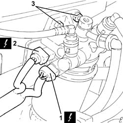
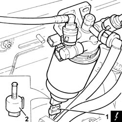

1060G30 water presence sensor on fuel filter r r
- Path
- Procedures > 10 ENGINE > 1060 DIESEL FUEL INJECTION > 1060G pressure pump electric control > 1060G30 water presence sensor on fuel filter r r
- Kind
- repair procedure (removal / refitting; the operation number is the code)
- Applies to
- all engines; all production periods
- Interactive page
- https://sloeber94.github.io/elrnDB-fDbl/en/#/2584494
Applies to: all engines; all production periods
 Removing
Removing
 Refitting
RefittingEnsure that the ignition key is in the stop OFF, then disconnect the battery negative terminal.
 | Name | Connector |
|---|---|---|
- | Battery | A1B |
1. Disconnect the electrical connection from the thermal switch for the fuel heater.
| Name | Connector |
|---|---|---|
1 | Diesel preheating resistor |
2. Disconnect the electrical connection from the fuel pre-heating device.
| Name | Connector |
|---|---|---|
2 | Diesel preheating resistor |
3. Undo the nuts fixing the fuel filter to the engine compartment bulkhead.

Applies to: all engines; all production periods
1. Raise the fuel filter sufficiently to disconnect the electrical connection from the water presence sensor in the fuel filter.
| Name | Connector |
|---|---|---|
1 | Water in diesel filter sensor | K31 |
2. Undo and remove the ddiesel filter water presence sensor.

Applies to: all engines; all production periods
Refitting
RemovingRefit the water presence sensor in the diesel filter and tighten by hand until the seal is in contact with the fuel filter. Then turn through another 1/4 turn.
Connect the electrical connection to the water-in-fuel filter presence sensor.
Replace the fuel filter assembly in its housing and secure to the engine bulkhead with nuts.
Connect the electrical connection to the fuel pre-heating device.
Connect the electrical connection to the thermal switch for the fuel heater.
Connect the battery terminal (-).